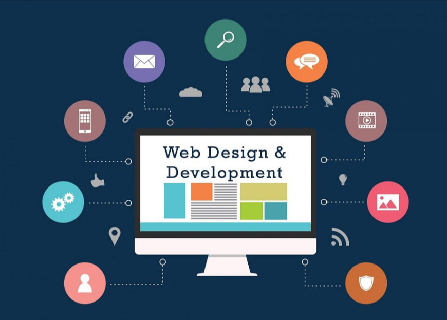

Full-Stack Web Development
I'm passionate about creating dynamic, responsive web applications that provide exceptional user experiences. My interest spans both frontend and backend development, focusing on modern frameworks and scalable architectures.
I particularly enjoy working with React for building interactive user interfaces, Node.js for server-side development, and exploring new technologies like Next.js and TypeScript. The rapid evolution of web technologies keeps me constantly learning and experimenting with new approaches to solve complex problems.